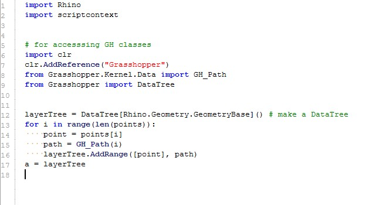

Introduction to PYTHON 2
Emphasize code readability, and allow programmers to express concepts in fewer lines of code than would be possible in languages such as C++ or Java.
Created by Camel Aissani / @camelaissani
Inspired by the book of Swaroop C H - A Byte of Python
History
Python was conceived in the late 1980s by Guido van Rossum.
Many of Python's features originated from an interpreted language called ABC.
- First version was released in February 1991
- Python 2.0 was released on 16 October 2000
- Python 3.0 was released on 3 December 2008
Guido van Rossum is a big fan of Monty Python's Flying Circus
Ugh!

Where are my curly brackets?! |
 |
Coool!
After few weeks of code
Basics
Numbers
Mainly of two types - integers and floats.
-
Strings
- Specified between double quotes or simple quotes
- You can specify multi-line strings using triple quotes - (""" or ''').
'''This is a multi-line string. This is the first line. This is the second line. "What's your name?," I asked. He said "Bond, James Bond." '''- Strings are immutable
Focus on few string manipulations
- The format method - Best practice to concatenate strings:
age = 20
name = 'Swaroop'
print '{0} was {1} years old when he wrote this book'.format(name, age)
print 'Why is {0} playing with that python?'.format(name)
#or
print '{} was {} years old when he wrote this book'.format(name, age)
print 'Why is {} playing with that python?'.format(name)
- Raw String
If you need to specify some strings whithout esacping sequences, then what you need is to specify a raw string by prefixing r or R to the string. An example is:
r"Newlines are indicated by \n"
Operators
For calculating
+ (plus) - (minus) * (multiply) ** (power) / (divide) % (modulo)
For comparing
< (less than) <= (less than or equal to) > (greater than) >= (greater than or equal to) == (equal to) != (not equal to) not (boolean NOT) and (boolean AND) or (boolean OR)
For playing with bit
<< (left shift) >> (right shift) & (bit-wise AND)...
Statements
The if statement
number = 23
guess = int(raw_input('Enter an integer : '))
if guess == number:
print 'Congratulations, you guessed it.'
print '(but you do not win any prizes!)'
elif guess < number:
print 'No, it is a little higher than that'
else:
print 'No, it is a little lower than that'
print 'Done'
The while Statement
number = 23
running = True
while running:
guess = int(raw_input('Enter an integer : '))
if guess == number:
print 'Congratulations, you guessed it.'
running = False
elif guess < number:
print 'No, it is a little higher than that.'
else:
print 'No, it is a little lower than that.'
else:
print 'The while loop is over.'
print 'Done'
Loops
The for loop
for i in range(1, 5):
print i
else:
print 'The for loop is over'
The break Statement
while True:
s = raw_input('Enter something : ')
if s == 'quit':
break
print 'Length of the string is', len(s)
print 'Done'
The continue Statement
while True:
s = raw_input('Enter something : ')
if s == 'quit':
break
if len(s) < 3:
print 'Too small'
continue
print 'Input is of sufficient length'
# Do other kinds of processing here...
The with statement
Acquiring a resource in the try block and subsequently releasing the resource in the finally block.
with statement enables this in a clean manner:
with open("poem.txt") as f:
for line in f:
print line,
Function
Functions are defined using the def keyword and ended with a colon:
def find_max(a, b):
'''Gets the maximum of two numbers.
The two values must be integers.'''
if a > b:
return a
if a == b:
return None
return b
max = find_max(3, 4) # call the function
if max is not None:
print max, 'is maximum'
else:
print 'values are identical'
Python has a nifty feature called documentation strings, usually referred to by its shorter name docstrings.
print find_max.__doc__ returns
Gets the maximum of two numbers. The two values must be integers.
Default Argument Values
def func(a, b=5, c=10):
print 'a is', a, 'and b is', b, 'and c is', c
func(1)
func(3, 7)
func(25, c=24)
func(c=50, a=100)
Output
a is 1 and b is 5 and c is 10 a is 3 and b is 7 and c is 10 a is 25 and b is 5 and c is 24 a is 100 and b is 5 and c is 50
VarArgs parameters
Sometimes you might want to define a function that can take any number of parameters, this can be achieved by using the stars
def total(initial=5, *numbers, **keywords):
count = initial
for number in numbers:
count += number
for key in keywords:
count += keywords[key]
return count
print total(10, 1, 2, 3, vegetables=50, fruits=100)
*numbers parameter is transformed into a tuple
**keywords are collected as a dictionary
Lambda Form
A lambda statement is used to create new function objects
Ascending sort on key 'y'
points = [ { 'x' : 2, 'y' : 3 },
{ 'x' : 4, 'y' : 1 } ]
points.sort(key=lambda i : i['y'])
Output
[{'y': 1, 'x': 4}, {'y': 3, 'x': 2}]
Scope
All variables have the scope of the block they are declared
in starting from the point of definition of the name.
|
Variable declared in main block |
Usage of the global statement |
|
Output: x is 50 Changed local x to 2 x is still 50 |
Output: x is 50 Changed global x to 2 Value of x is 2 |
Module
The simplest way is to create a file with a .py extension that contains functions and variables.
A module can be imported by another program to make use of its functionality.
import sys
print('The command line arguments are:')
for i in sys.argv:
print i
Output
$ python module_using_sys.py we are arguments The command line arguments are: module_using_sys.py we are arguments
Other kind of import
from math import sqrt
print "Square root of 16 is", sqrt(16)
from mymodule import *
import os as real_os
from os import fdopen as os_fdopen, exit, stat as os_stat
Module's name
Every module has a name and statements in a module can find out the name of their module.
if __name__ == '__main__':
print 'This program is being run by itself'
else:
print 'I am being imported from another module'
This is handy for the particular purpose of figuring out whether the module is being run standalone or being imported
Package
Packages are just folders of modules with a special __init__.py file that indicates
to Python that this folder is special because it contains Python modules.
This is how you would structure the folders:
-/ - world/ - __init__.py - asia/ - __init__.py - india/ - __init__.py - foo.py - africa/ - __init__.py - madagascar/ - __init__.py - bar.py
Data Structures
-
List
Ordered collection of items.
List is a mutable data type.
shoplist = ['apple', 'mango', 'carrot', 'banana']
-
Tuple
Tuples are used to hold together multiple items.
They are immutable.
zoo = ('python', 'elephant', 'penguin')
-
Dictionary
A dictionary is like an address-book, you can find by knowing only his/her name to get values (details).
You can use only immutable objects (like strings) for the keys of a dictionary.
Values can use either immutable or mutable objects.
ab = { 'Swaroop' : 'swaroop@swaroopch.com', 'Larry' : 'larry@wall.org', 'Matsumoto' : 'matz@ruby-lang.org', 'Spammer' : 'spammer@hotmail.com' }
-
Sequence
Lists, tuples and strings are examples of sequences.
Indexing operation
shoplist = ['apple', 'mango', 'carrot', 'banana'] print 'Item 0 is', shoplist[0]Slicing operation
shoplist = ['apple', 'mango', 'carrot', 'banana'] print 'Item 1 to 3 is', shoplist[1:3] print 'Item 2 to end is', shoplist[2:] print 'Item 1 to -1 is', shoplist[1:-1] print 'Item start to end is', shoplist[:] -
Set
Sets are unordered collections of unique elements.
bri = set(['brazil', 'russia', 'india'])
Class
Objects are instances of the class.
|
|
Decorators @classmethod or a @staticmethod used for method that belongs to the class and not to the object.
Private Variables
All class members are public. There is one exception if you use data members
with names using the double underscore prefix such as __privatevar.
Those member are considered as "private".
Name-mangling is only used to avoid name clashes with names defined in subclasses.
Also, by convention, a name prefixed with an underscore (e.g. _spam)
should be treated as a non-public part of the API
Inheritance
|
|
Decorators
Decorators are a shortcut to applying wrapper functions
def makebold(fn):
def wrapped():
return "" + fn() + ""
return wrapped
def makeitalic(fn):
def wrapped():
return "" + fn() + ""
return wrapped
@makebold
@makeitalic
def hello():
return "hello world"
print hello() ## returns hello world
This is helpful to "wrap" functionality with the same code over and over again.
Exceptions
The error or exception that you can raise should be a class which directly or indirectly must be a derived class of the Exception class.
import sys
try:
do_some_stuff()
except: # catch *all* exceptions
e = sys.exc_info()[0]
write_to_page( "Error: %s
" % e )
raise # will re-raise the last exception
finally:
cleanup_stuff()